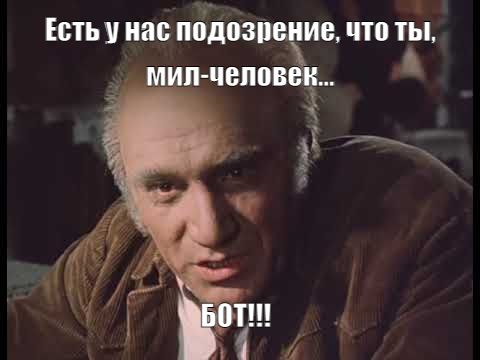
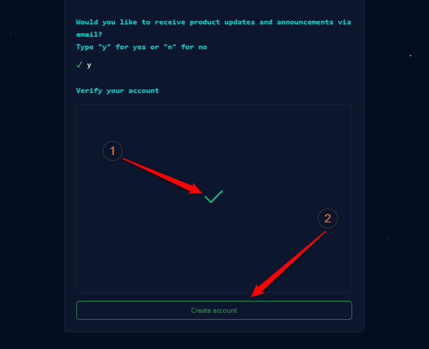

.
.Далее следует несколько шагов где GitHub пытается решить свои вопросы, а не ваши. И первый такой вопрос, по всей видимости, для GitHub-овцев формулировал гражданин горбатый:
Если серьезно, то GitHub просто обязан защитить себя от массовых автоматических регистраций, поэтому предлагает вам доказать, что вы реальный человек, и пройти что-то вроде капчи:

Для того, чтобы начать решать задачу, нажмите на кнопку Проверить.
Когда вы нажмете эту кнопку, произойдет две вещи:
.
Ну, не знаю, вы, может, и нет, но я охренел. Потому что мое задание звучало так —
Выберите, блин, спиральную галактику!
:

Даже когда сайты просто просят вас выбрать велосипеды или, какие-нибудь там, светофоры — и то можно ошибиться, и кликнуть не туда. А тут блин:
Надо реально знать, как выглядит спиральная галактика, чтобы тыкнуть в правильную клетку!
В общем, я посчитал эту задачу нейкой формой астрономического геноцида, выбрал ту галактику, у которой самые большие завитушки, и кликнул мышью по картинке.
После этого GitHub принялся проверять мой ответ:

Это заняло некоторое время (несколько секунд)... Но, в конце-концов, я получил вот такую картинку:

Картинка говорит нам о том, что я правильно решил задачу, и могу смело жать кнопку Create Account.
Надеюсь, вы тоже быстро справились с решением астрономических задач и мы можем переходить к следующему шагу.